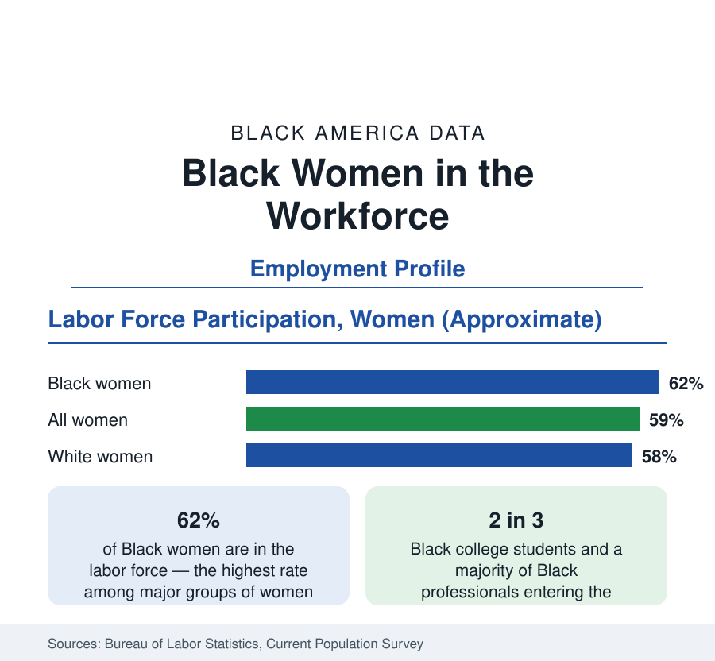

Black Employment
Black Women in the Workforce: Participation, Pay, and Occupations
Black women work at the highest participation rates of any major group of women — about 62 percent — across every level of the economy. The BLS data.

Black women participate in the labor force at about 62 percent — higher than women of any other major racial group, higher than the rate for women overall, and a continuation of a pattern as old as the data: Black women have always worked outside the home at rates the rest of the American economy reached only in recent generations. Roughly eleven million Black women are in the labor force. They are at once the most credentialed segment of Black America — two in three Black college students — and, in the earnings data, among the most underpaid workers in the economy relative to their education. This article reports the employment data on Black women specifically.
Participation: The Longest Working Tradition
The participation history is the foundation. Enslaved women's labor was compulsory; after emancipation, Black women's work — in agriculture, in domestic service, in laundries and factories — remained economic necessity in households the wage data show could not subsist on one income, at a time when the national female participation rate was a fraction of today's. Through the twentieth century Black women's participation ran far ahead of the national female rate — by margins of twenty points in the early postwar data — and the gap has narrowed mainly because everyone else caught up. The current figure of about 62 percent, with labor force attachment persisting through the child-rearing years at rates above other groups', is the modern form of the oldest continuous fact in this reference's employment data.
Occupations: From Domestic Work to the Professions
The occupational transformation within living memory is the data's dramatic arc. In the mid-twentieth-century censuses, the modal Black working woman was a domestic worker in a private household — the occupation that employed roughly a third or more of Black working women at mid-century. That occupation has essentially vanished from the top ranks, replaced by a distribution that now centers on health care (the largest field: nursing, home health, and the support occupations at every credential level), education, public administration, retail and food service, and a growing professional stratum — management and professional occupations now employ more than a third of Black working women, triple the share of the domestic era. The pipeline data point the same direction: Black women earn roughly two-thirds of the bachelor's degrees and a still larger share of the graduate credentials awarded to Black students.
Pay: The Compounding Gap
The earnings data give the counterweight. Black women's median earnings stand at roughly 70 cents for every dollar earned by White men, in the commonly computed full-time figures — a gap that reflects both the racial gap and the gender gap compounding — and at roughly 80 to 85 cents against White women's earnings. Occupational composition explains part of it: the care and service occupations where Black women concentrate are low-wage fields. Within-occupation gaps persist after composition in the decomposition studies. The unemployment data add the third term: Black women's unemployment runs at roughly one and a half times the rate for White women across the cycle, with the same double-the-White-men pattern the headline series shows. And the wealth data close the loop in the census section's terms: the median Black woman approaching retirement holds the thinnest asset base of any major demographic, the accumulation of the pay and unemployment arithmetic compounded across a working life.
The Public and Care Economies
Two sectors structure Black women's employment disproportionately. Government — the subject of this section's public-sector profile — employs Black women at the highest rates of any group, and the education and health arms of the public sector are majority-female Black workplaces across much of the South: the public school systems, the public hospitals, the state universities. Health care privately organized is the second pole, from hospital systems to home health agencies, where Black women are the workforce's backbone and its lowest-paid tier simultaneously. Any policy or market shift in education funding, Medicaid reimbursement, or home-care wages registers in Black women's earnings data first — a sensitivity the headline aggregates for all workers do not reveal.
Reading the Black Women's Data
The Black women's employment profile is the reference's clearest case of one population carrying several datasets at once: the highest participation, the fastest credential growth, among the widest pay gaps, and the economy's greatest concentration in its essential and least-valued occupations. Read together, the figures describe not a lagging workforce but an underpriced one — and the fastest-growing founder population in the business section, as Black women's entrepreneurship has become the standard exit from the arithmetic this article records.
More in Black Employment
The Black Unemployment Rate: The Two-to-One Pattern
Black unemployment runs at roughly twice the White rate — 5.5 percent against 3.3 percent in annual averages — a ratio stable across five decades of federal data. How it is measured and why it persists.
Black Median Weekly Earnings: The 80-Cent Ratio
Black full-time workers earn a median of about $900 a week — roughly 80 cents for every dollar White workers earn. The BLS earnings data by group, gender, and occupation.
Black Labor Force Participation: Working at National Rates
Black labor force participation runs at roughly the national rate — and Black women participate at higher rates than White women. The BLS participation data.
Source: U.S. Bureau of Labor Statistics, Current Population Survey; U.S. Census Bureau, American Community Survey.